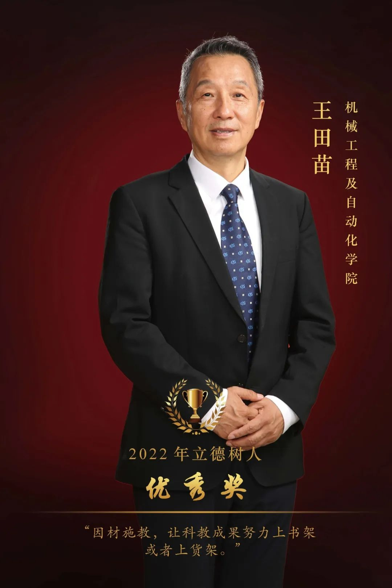
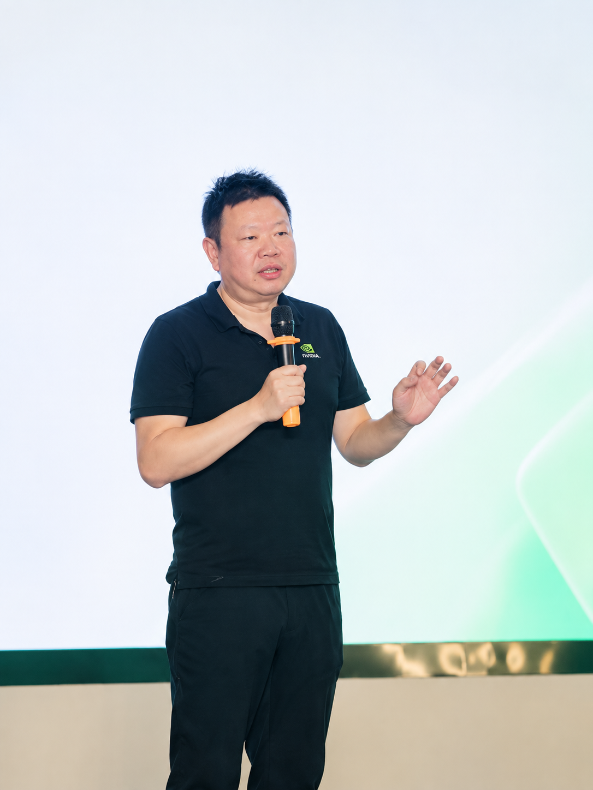
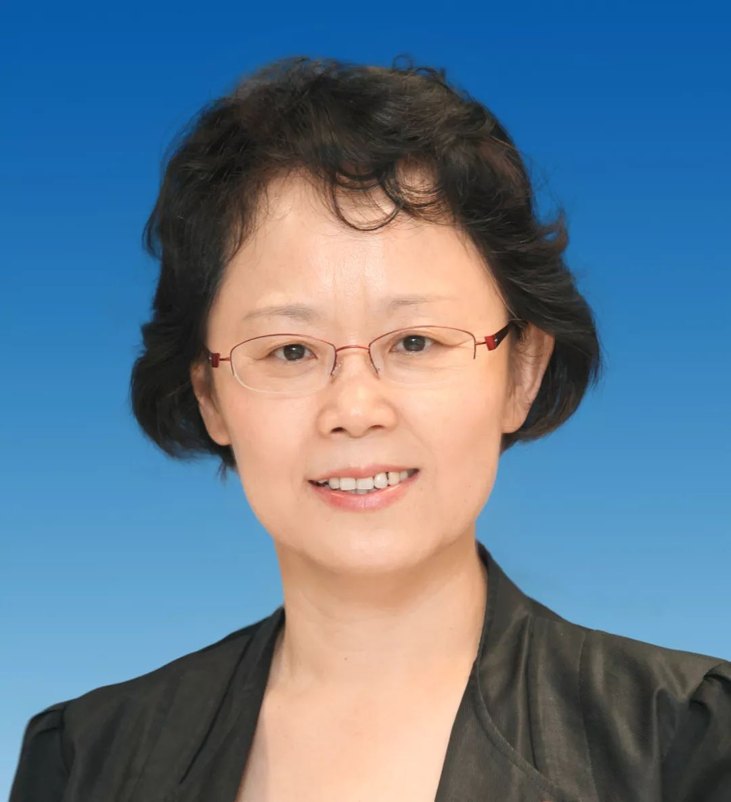

—— 每一条签名都算数
名 单 焦 点

王田苗
北航机器人研究所教授、名誉所长 · 创业导师型天使投资人
王田苗是中国机器人领域的权威学者，曾任国家 863 计划机器人主题专家组组长。早年支持的学生企业九号公司、天智航、埃夫特等相继上市；如今他以创业导师型天使投资人的身份，专注扶持硬科技早期项目，累计投资孵化约 60 个学生创业项目，并发起中关村智友研究院。他所沉淀的，是从实验室技术、早期创业到产业网络的一条长期连接。
「因材施教，让科教成果努力上书架或者上货架。」
—— 2022 年北航「立德树人优秀奖」授奖词
签署于 2026-10-28
裴晟
NVIDIA 初创加速计划经理 · 科技创业孵化与生态连接者
裴晟长期参与 NVIDIA Inception 在中国的创业孵化工作。该计划自 2016 年落地以来，已服务 2000 余家科技创业公司，提供算力与产品支持、技术辅导、市场资源和融资对接。从技术验证、产品成长到市场、产业与资本资源，这条路径将分散的支持逐步编织成可持续的创业生态。

李虹
清华大学心理与认知科学系长聘教授 · 博士生导师
李虹教授带领清华大学情绪与决策实验室，长期研究人们在不确定、压力与危机情境中如何作出选择。理解人类如何感知风险、权衡目标与形成满意感，也为理解、设计和评估 AI 决策提供了可传承的参照：AI 的决策问题并非凭空出现，而是与人类长期面对的判断、选择和责任问题相连。
从人类决策到 AI 决策：三个研究焦点
照片与简介来自公开报道（北航立德树人奖公示、NVIDIA 官方博客、清华大学心理与认知科学系、界面新闻等），仅用于本页展示。入选者由站点维护者提名——唯一的标准：已在本名单签署，或为契约发起团队成员。